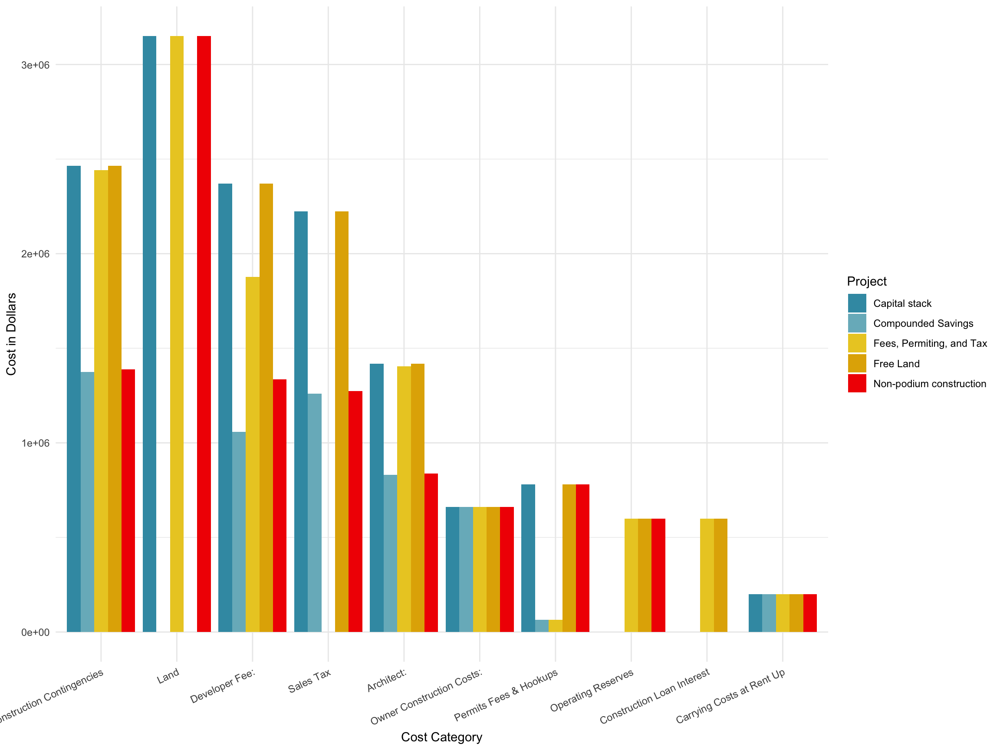

for(l_idx in 1:length(sub_info)){
for(p_idx in 1:5){
if(exists("fin_mat")){
fin_mat <- rbind(fin_mat, make_row(orig_dat, sub_info, l_idx, p_idx))
}else{
fin_mat <- make_row(orig_dat, sub_info, l_idx, p_idx)
}
}
}
for(l_idx in 1:length(sub_info)){
for(p_idx in 1:5){
if(exists("cm_mat")){
cm_mat <- rbind(cm_mat, make_row(orig_dat, sub_info, l_idx, p_idx))
}else{
cm_mat <- make_row(orig_dat, sub_info, l_idx, p_idx)
}
}
}
fin_df <- as.data.frame(fin_mat, stringsAsFactors = FALSE)
cat_df <- as.data.frame(cm_mat, stringsAsFactors = FALSE)
fin_df$Project <- c("Capital stack", "Fees, Permiting, and Tax",
"Non-podium construction", "Free Land",
"Compounded Savings")[as.numeric(fin_df$Project)]
cat_df$Project <- c("Capital stack", "Fees, Permiting, and Tax",
"Non-podium construction", "Free Land",
"Compounded Savings")[as.numeric(cat_df$Project)]
fin_df[, 4] <- as.numeric(fin_df[, 4])
cat_df[, 4] <- as.numeric(cat_df[, 4])
library(plotly)
plot_ly(fin_df, x = ~Project, y = ~Expense, type = 'bar',
name = ~Subcategory, color = ~Subcategory) %>%
layout(yaxis = list(title = 'Count'), barmode = 'stack')sub_df <- fin_df %>% group_by(Category, Project) %>%
summarize(Cost = sum(Expense))
my_cols <- wesanderson::wes_palettes$Zissou1
ggplot2::ggplot(data = sub_df, aes(x = Category, y = Cost,
fill = Project)) +
geom_bar(stat="identity", position=position_dodge()) +
ylab("Percent of Population (Within Race)") + theme_minimal() +
theme(axis.text.x=element_text(angle = 45, hjust = 1)) +
scale_fill_manual(values = my_cols)
is_dif <- function(df, cat_name){
s_df <- df %>% subset(Category == cat_name)
s_df$Expense[is.na(s_df$Expense)] <- 0
as.logical(0 != sum(abs(s_df$Expense - s_df$Expense[1])))
}
rm("dif_mat")
for(l_idx in 1:length(sub_info)){
v_name <- names(sub_info)[l_idx]
if (is_dif(cat_df, v_name)){
if (exists("dif_mat")){
dif_mat <- rbind(dif_mat,
cat_df %>% subset(Category == v_name))
}else{
dif_mat <- cat_df %>% subset(Category == v_name)
}
}
}
plot_ly(dif_mat, x = ~Project, y = ~Expense, type = 'bar',
name = ~Category, color = ~Category) %>%
layout(yaxis = list(title = 'Count'), barmode = 'stack')rm("same_mat")
for(l_idx in 1:length(sub_info)){
v_name <- names(sub_info)[l_idx]
if (!is_dif(cat_df, v_name)){
if (exists("same_mat")){
same_mat <- rbind(same_mat,
cat_df %>% subset(Category == v_name))
}else{
same_mat <- cat_df %>% subset(Category == v_name)
}
}
}
plot_ly(same_mat, x = ~Project, y = ~Expense, type = 'bar',
name = ~Category, color = ~Category) %>%
layout(yaxis = list(title = 'Count'), barmode = 'stack')Note that the echo = FALSE parameter was added to the code chunk to prevent printing of the R code that generated the plot.